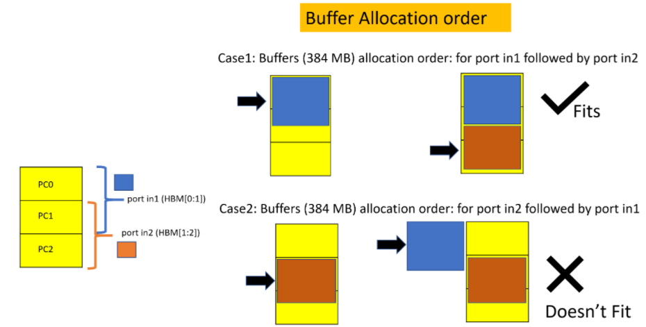

Vitis™ Application Acceleration Development Flow Tutorials |
Application Overview¶
This tutorial uses a simple example of vector addition with DDR based implementation. Ports in1 and in2 are reading from DDR banks 0 and 1, respectively, and port out is writing the results in DDR bank 2. The tutorial will walk through the necessary changes to the existing application to migrate to HBM.
Using DDR¶
The kernel code is a simple vector addition with the following function signature.
void vadd(
const unsigned int *in1, // Read-Only Vector 1
const unsigned int *in2, // Read-Only Vector 2
unsigned int *out, // Output Result
int dsize, // Size in integer
const unsigned int kernel_loop, // Running the same kernel operations kernel_loop times
bool addRandom // Address Pattern is random
)
in1 and in2: inputs for streaming data from DDR over AXI interfaces
out: output for streaming output results of vector addition writing in DDR over AXI interface
dsize: sets the size of memory access from kernel ports accessing DDR
kernel_loop : number of times the kernel operations are being called to keep the kernel busy accessing memory.
addRandom : enables random access if set to 1
For more information on the kernel source code, refer to <Project>/reference_files/kernel.cpp
The ports to DDR banks connectivity is established with the system port mapping option using the --sp switch. This switch allows the developer to map the kernel ports to specific global memory banks.
For more information refer to Mapping Kernel Ports to Memory, refer to Vitis User Guide.
The contents of the example connectivity file, DDR_connectivity.cfg are shown below. Makefile target will create this file automatically.
[connectivity]
sp=vadd_1.in1:DDR[0]
sp=vadd_1.in2:DDR[1]
sp=vadd_1.out:DDR[2]
The host code creates three buffers, one each in DDR0, DDR1, and DDR2. Refer to host code available in <Project>/reference_files/host.cpp. Each buffer connects to a single DDR bank with a capacity of 16GB, which is higher than the buffer size used in this application. You should be able to migrate up to max 4GB due to limitations on the Linux kernel.
The following code creates the three buffers of size vector_size_bytes.
134 : cl::Buffer(context,CL_MEM_USE_HOST_PTR | CL_MEM_READ_ONLY, vector_size_bytes, &source_in1[total_data_size]);
135 : cl::Buffer(context,CL_MEM_USE_HOST_PTR | CL_MEM_READ_ONLY, vector_size_bytes, &source_in2[total_data_size]);
136 : cl::Buffer(context,CL_MEM_USE_HOST_PTR | CL_MEM_WRITE_ONLY, vector_size_bytes, &source_hw_results[total_data_size]);
140 : krnl_vector_add.setArg(1, buffer_in2[j]));
141 : krnl_vector_add.setArg(0, buffer_in1[j]));
142 : krnl_vector_add.setArg(2, buffer_output[j]));
For more information on the kernel source code, refer to <Project>/reference_files/host.cpp
Run application using DDR¶
Let’s run the hardware application using DDR with a size of 600MB, sequential address pattern, and enqueue the kernel one time. The host will migrate 600MB to DDR0 (buffer_in1) and DDR1(buffer_in2) respectively. The kernel will perform the compute and store the results in DDR2, buffer_output.
Here is the makefile command to run ()
#make ddr_addSeq_build - executed already in first module.
make ddr_addSeq
The above run command essentially expands to the following.
make run TARGET=hw memtype=DDR dsize=600 addrndm=0 krnl_loop=1 buildxclbin=0
memtype sets memory as DDR or HBM
dsize is the amount of data migrated by the host to memory banks and accessed by the kernel ports, in1 and in2
kernel_loop sets the number of time the kernel loop repeats
buildxclbin=0 will not generate the new xclbin.
txSize is set to 64 by default. It’s the size of transactions issued by kernel port while accessing memory.
The make command will geneated build directory shown as ../build/DDR_Banks_d512_txSize64
TARGET=hw_emu can also be used for running hardware emulation, but this will take significant time to run the application for a 600MB size buffer. For this reason, the application is run on hardware by using TARGET=hw
The above commands to run the application on hardware show the following results
*** Running hw mode *** Use Command Line to run application!
cd ./../build/DDR_Banks_d512_txSize64 && ./host vadd_hw.xclbin 600 0 1 64;
Total Data of 600.000 Mbytes to be written to global memory from host
Kernel is invoked 1 time and repeats itself 1 times
Found Platform
Platform Name: Xilinx
DEVICE xilinx_u200_gen3x16_xdma_1_202110_1
INFO: Reading vadd_hw.xclbin
Loading: 'vadd_hw.xclbin'
- host loop iteration #0 of 1 total iterations
kernel_time_in_sec = 0.0416315
Duration using events profiling: 41473086 ns
match_count = 157286400 mismatch_count = 0 total_data_size = 157286400
Throughput Achieved = 15.17 GB/s
TEST PASSED
The host is migrating 600MB of data to both DDR0 and DDR1. The kernel accesses this data using in1, in2 ports from DDR0 and DDR1, respectively. The vector addition is performed by kernel, and results are written to DDR2. These results from DDR2 are migrated back to the host. The next section goes over the steps required to migrate this DDR based application to HBM.
Migration to HBM¶
The host code and kernel code are agnostic to the memory type used, whether DDR is used or HBM, or even PLRAMs. The only change you will need to make here is to modify the connectivity file.
Vitis flow makes it easy to switch memory connection using -sp switches, and in this case, we need to replace DDR with HBM. The capacity of each HBM bank is 256MB. Since our application requires 600MB of data to be added, we will need 3 HBM banks as contiguous memory. Vitis flow enables this by grouping the memory as shown below in the connectivity file.
Run application using HBM¶
You will perform the following 3 experiments here.
Kernel ports, in1 and in2 read from 2 HBM PCs. Host sends 512MB data to HBM.
Kernel port, in1, and in2 read from 2 HBM PCs. The host sends more data than 512MB. This configuration will result in an application error since you are accessing more than 512MB.
Kernel ports, in1 and in2 share the same HBM PC.
The contents of the example connectivity file, HBM_connectivity.cfg are shown below. Makefile target will create this file automatically based on argument, banks.
[connectivity]
sp=vadd_1.in1:HBM[0:1]
sp=vadd_1.in2:HBM[2:3]
sp=vadd_1.out:HBM[4:5]
Run the following command to use the application with HBM memory of size 512MB for in1,in2, and out ports.
#make hbm_addSeq_2Banks_build - executed already in first module.
make hbm_addSeq_2Banks
The above command is equivalent of
make run TARGET=hw memtype=HBM banks=0_1 dsize=512 buildxclbin=0
dsize=512 sets the data size to be accessed from HBM by kernel port in1 and in2.
banks=0_1 will create HBM_connectivity.cfg file with contents shown as above in appropriate builddir, ../build/HBM_2Banks_d512_txSize64
cd ./../build/HBM_addSeq_2Banks_d512_txSize64 && ./host vadd_hw.xclbin 512 0 1 64;
Total Data of 512.000 Mbytes to be written to global memory from host
The kernel is invoked 1 time and repeats itself one time
Found Platform
Platform Name: Xilinx
DEVICE xilinx_u50_gen3x16_xdma_201920_3
INFO: Reading vadd_hw.xclbin
Loading: 'vadd_hw.xclbin'
- host loop iteration #0 of 1 total iterations
kernel_time_in_sec = 0.0413112
Duration using events profiling: 41136148 ns
match_count = 134217728 mismatch_count = 0 total_data_size = 134217728
Throughput Achieved = 13.0511 GB/s
TEST PASSED
If the host transfers data equivalent to more than 512MB, the application will have the following error.
Run the following command
make run TARGET=hw memtype=HBM banks=0_1 dsize=600
The application run results into error as shown below.
cd ./../build/HBM_addSeq_2Banks_d512_txSize64 && ./host vadd_hw.xclbin 600 0 1 64;
Total Data of 600.000 Mbytes to be written to global memory from host
The kernel is invoked 1 time and repeats itself 1 times.
Found Platform
Platform Name: Xilinx
DEVICE xilinx_u50_gen3x16_xdma_201920_3
INFO: Reading vadd_hw.xclbin
Loading: 'vadd_hw.xclbin'
- host loop iteration #0 of 1 total iterations
XRT build version: 2.8.743
Build hash: 77d5484b5c4daa691a7f78235053fb036829b1e9
Build date: 2020-11-16 00:19:11
Git branch: 2020.2
PID: 17233
UID: 31781
[Mon Jan 11 19:28:15 2021 GMT]
HOST: xcodpeascoe40
EXE: /scratch/ravic/Vitis-In-Depth-Tutorial/Runtime_and_System_Optimization/Feature_Tutorials/04-using-hbm/build/HBM_addSeq_2Banks_d512_txSize64/host
[XRT] ERROR: std::bad_alloc
./../reference_files/host.cpp:162 Error calling err = krnl_vector_add.setArg(2, buffer_output[j]), error code is: -5
[XRT] WARNING: Profiling may contain incomplete information. Please ensure all OpenCL objects are released by your host code (e.g., clReleaseProgram()).
Makefile:102: recipe for target 'run' failed
make: *** [run] Error 1
As expected, the application results in error as you are trying to create a 600 MB buffer in HBM[0:1]. XRT sees this as a contiguous memory of 256*2 = 512MB, but the host exceeds this size limit, resulting in an application error.
The provided Makefile adds the flexibility of creating your custom connectivity file by either using the banks argument. Make target has functionality available in mem_connectivity.mk to create the memory connectivity file.
If the application doesn’t require the full memory bank, Vitis flow also provides the capability of sharing the memory banks across the ports. Here is one example of connectivity for sharing banks between ports in1 and in2.
[connectivity]
sp=vadd_1.in1:HBM[0:1]
sp=vadd_1.in2:HBM[1:2]
sp=vadd_1.out:HBM[3:4]
The ports in1 and in2 and sharing bank 1 of HBM. So the application can create buffers for each kernel port with 384MB as maximum size.
Run the following command to use the application with HBM memory of size 384MB for in1,in2, and out ports.
#make hbm_addSeq_overlap_build - executed already in first module.
make hbm_addSeq_overlap
The above command shows the following results.
*** Running hw mode *** Use Command Line to run application!
cd ./../build/HBM_overlapBanks_d512_txSize64 && ./host vadd_hw.xclbin 384 0 1 64;
Total Data of 384.000 Mbytes to be written to global memory from host
Kernel is invoked 1 time and repeats itself 1 times
Found Platform
Platform Name: Xilinx
DEVICE xilinx_u50_gen3x16_xdma_201920_3
INFO: Reading vadd_hw.xclbin
Loading: 'vadd_hw.xclbin'
- host loop iteration #0 of 1 total iterations
kernel_time_in_sec = 0.0311151
Duration using events profiling: 30897093 ns
match_count = 100663296 mismatch_count = 0 total_data_size = 100663296
Throughput Achieved = 13.0321 GB/s
TEST PASSED
When multiple ports are sharing overlapping bank and one (or more) of the buffer trying to utilize the overlapping portion, the order of assigning buffers (in the host code) to the corresponding kernel ports can become important. In this particular example both buffers for the ports in1 and in2 are trying to utilize the overlapping bank 1 when each of them allocating 384Mb. Hence the host application must assigns buffer for in1 first and then assigns buffer for in2. Reversing this sequence will result into the bad alloc error. This is demonstrated in the following Figure.

In other words, there is no Lazy Allocation. The buffers are allocated upfront (and immediately) following the host code buffer handling order.
Additionally, you can also connect all the 32 HBM banks to each of the kernel ports based on the application requirement. This way, the whole memory space will be available to all the ports. The overall HBM efficiency will vary based on the access pattern and how many channels are being accessed, as described in the previous tutorial module.
Next Step¶
In the next steps, you will experiment with how to achieve the maximum bandwidth using all 32 channels as connectivity but accessing either 1 PC or a group of PCs from a single kernel port and varying the address patterns as transaction size.
Start the next step: HBM Bandwidth Results
Copyright© 2021 Xilinx